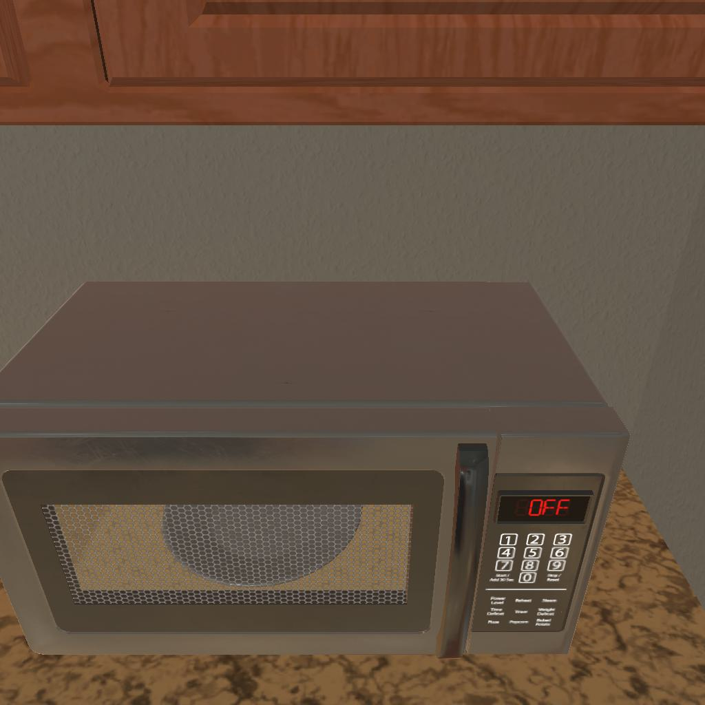

---------------------------------------------------------task: 23---------------------------------------------------------
--------------------------------------------------------------------------------------------------------------------------------------------------------------------
--------------------------------------------------------------------------------------------------------------------------------------------------------------------
Step:--------------------------------------------------------------------------18-------------------------------------------------------------------------------
----------------------------------------
VLM Prompt:
Image1:
**Instruction**
1. Analyze the provided image to identify all visible household objects, focusing on those relevant to the task description "put a hot mug in coffeemachine."
2. Use the analysis of the image and the task hint "The agent must find an object of the desired type, pick it up, go to a microwave, heat the object with the microwave, then find the correct location to place it, and put it down there. The agent does not need to use the microwave button or open the microwave to heat the object, and the agent just needs to do action that is "heat the object with the microwave"." to answer the question: what is the most reasonable action in the choices for the task description "put a hot mug in coffeemachine"?
4. Decide and write the answer using the template: The answer is: (i): , where i is the real number. If there is no desired object in the image, search every place based on **Initial Observation** to find the object. And if no one is exactly correct, choose a similar answer.
**Initial Observation**
You are in the middle of a room. Looking quickly around you, you can see cabinet (1-15), fridge (1), countertop (1-4), drawer (1-4), microwave (1), toaster (1), coffeemachine (1), garbagecan (1), sink (1), stoveburner (1-3), sinkbasin (1)
**Answer Choices**
(1): go to cabinet 1
(2): go to cabinet 2
(3): go to fridge 1
(4): go to countertop 1
(5): go to cabinet 5
(6): go to cabinet 6
(7): go to cabinet 7
(8): go to drawer 1
(9): go to drawer 2
(10): go to cabinet 8
(11): go to drawer 3
(12): go to cabinet 9
(13): go to cabinet 10
(14): go to drawer 4
(15): go to cabinet 11
(16): go to toaster 1
(17): go to cabinet 12
(18): go to cabinet 13
(19): go to cabinet 14
(20): go to cabinet 15
(21): go to countertop 2
(22): go to coffeemachine 1
(23): go to garbagecan 1
(24): go to countertop 3
(25): go to countertop 4
(26): go to sink 1
(27): go to stoveburner 1
(28): go to stoveburner 2
(29): go to stoveburner 3
(30): go to sinkbasin 1
(31): open microwave 1
(32): close microwave 1
(33): examine microwave 1
**Answer**
Let's think step by step by following the instructions.
----------------------------------------
----------------------------------------
Original Response:
The task description mentions "put a hot mug in coffeemachine," which implies that the agent first needs to find a mug, then heat it using the microwave, and finally place it in the coffeemachine. The image provided shows a microwave, which is relevant to the task as it is used to heat the mug. However, the image does not show a mug or a coffeemachine.
Given the initial observation, mugs are typically stored in cabinets or drawers. Since cabinets and drawers are listed in the initial observation, it is reasonable to assume that the agent should first search these locations for a mug.
The agent does not need to use the microwave button or open the microwave to heat the object, as per the task hint. Therefore, actions related to operating the microwave (open, close, examine) are not necessary.
Considering the above analysis, the most reasonable action to fulfill the task description would be to first find a mug. Since the image does not provide enough information about where the mug could be, we need to search the locations listed in the initial observation.
The answer is: (1): go to cabinet 1. If the mug is not found in cabinet 1, the agent should continue searching the cabinets and drawers sequentially until the mug is found. Once the mug is found, the agent can proceed to heat it with the microwave and then put it in the coffeemachine.
----------------------------------------
----------------------------------------
>>> Refine Original VLM Response and Get Pure Action: go to cabinet 1
----------------------------------------
-----------------------------------------------------------------
Running time: 114.84651589393616 seconds
Total Money: 8.357060000000002
-----------------------------------------------------------------
-----------------------------------------------------------------
Text Observation:You arrive at loc 0. The cabinet 1 is open. On the cabinet 1, you see a plate 3.
-----------------------------------------------------------------
UNSUCCEED